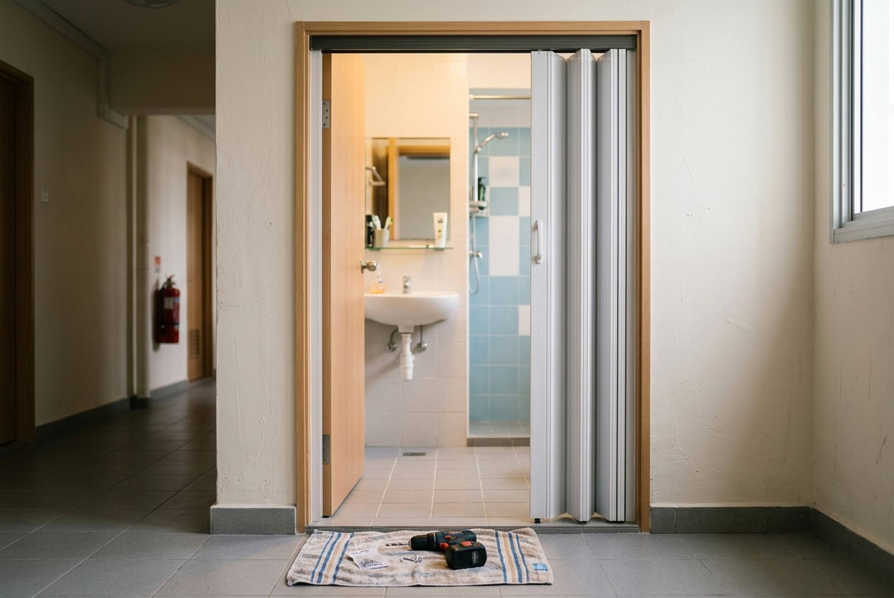

Toilet and bi-fold door repair: fix it or replace it?

The folding PVC door on a Singapore toilet is used dozens of times a day, gets splashed every time someone showers, and runs on a handful of small plastic parts. When it starts to jam, drag or jump off its track, the cause is almost always one of those parts, and it is usually a repair rather than a new door. A PVC bi-fold door repair on a recent job came to $80. Replacement, when it is needed, runs about $150 to $300 supplied and installed.
How a bi-fold toilet door works
A bi-fold (or concertina) door is two or more PVC panels joined by hinges or flexible strips, hanging from an aluminium track fixed to the top of the door frame. Four parts do the work:
- Pivot pins at the top and bottom of the panel closest to the frame. The whole door rotates on these.
- A roller or guide at the top of the leading panel, running in the track.
- The hinge strips between panels.
- The latch or magnetic catch that holds it closed.
Almost every fault is one of those four parts wearing, cracking or working loose, or the track itself being knocked out of line.
Common faults and what they mean
| Symptom | Likely cause | Usually |
|---|---|---|
| Door jumps off the track or hangs at an angle | Worn or broken top roller, or a loose track screw | Repair |
| Door drags on the floor | Bottom pivot has dropped or the pivot bracket is loose | Repair |
| Door sticks halfway when folding | Dirt and hair in the track, or a bent track | Clean or repair |
| Door will not stay shut | Worn magnetic catch or latch | Repair |
| Panels separating or flopping | Split hinge strip between panels | Repair if the part is available, otherwise replace |
| Panels cracked, brittle or yellowed | Age and UV; old PVC becomes brittle | Replace |
| Frame rotten or swollen at the bottom | Water getting into a timber frame | Replace door and frame |
A useful rule: if the panels are sound and the fault is in the moving parts, repair it. If the PVC itself is cracking, a repair will only last until the next panel goes.
A real repair: $80
September 2026, a unit at Rangoon Road. The PVC bi-fold toilet door was repaired in place rather than replaced, and it was invoiced as a single line: repair of PVC bi-fold door, $80.
That is the price range for a door where the panels are still sound. The parts in a bi-fold door are cheap; what you are paying for is a visit from someone with the right parts and the patience to get the door hanging square, because a door left slightly out of line wears a new roller out in months. Compare that with $150 to $300 for a new door, and repair is the obvious first call whenever the PVC itself is not cracked.
When to replace instead
- The PVC is cracked or brittle. Old panels snap when drilled or flexed, so new fittings have nothing to hold on to.
- Parts are not available for that door's make, which happens with older and unbranded doors.
- It has been repaired several times and keeps failing in a new place.
- The frame is damaged. Timber toilet door frames rot or swell at the bottom where they sit in water.
- You are renovating the toilet anyway. Replace the door while the bathroom is being redone, not after. See HDB toilet renovation cost.
A new PVC or aluminium bi-fold toilet door, supplied and installed, is typically $150 to $300. Our guide to HDB door repair and replacement covers bedroom and main doors, and door installation covers the other door types by price.
Other toilet door types
- Slide-and-swing doors. Many newer HDB flats have toilet doors that slide along a track and can also swing open for access. Faults are similar: rollers, guides and the pivot mechanism. They are repairable the same way.
- Swing doors (timber or laminate). The usual fault is the bottom swelling from water, which makes it drag and eventually delaminate. Sealing the bottom edge helps early on; once it has swollen, it needs replacing, ideally with a water-resistant material.
- Sliding doors on a top track, sometimes glass. Covered in our sliding door guide.
Making it last
- Fold it, don't push it. Pushing the middle of the door rather than using the handle puts the load on the hinge strip.
- Clean the track every few months. Hair and soap residue collect there and make the roller skip.
- Keep the bottom dry. Squeegee water away from the door after showering.
- Fix it early. A door hanging slightly off-line wears the other parts and cracks panels. An $80 repair can become a new door if it is left to swing.
For landlords and tenants
A toilet door that won't close is one of the most common items on a handover defect list, and it is a small job to include in a move-out visit. If you are handing back a unit, see our move-out packages; the repair can be done in the same visit as the clean.
Frequently asked questions
How much does it cost to repair a bi-fold toilet door in Singapore?
A repair to the moving parts of a PVC bi-fold toilet door cost $80 on a real RK E&C job in September 2026. If the panels are cracked or parts are unavailable, a new PVC or aluminium bi-fold door typically costs $150 to $300 supplied and installed.
Why does my bi-fold door keep coming off the track?
Usually a worn or broken top roller, a loose track screw, or a bottom pivot that has dropped so the door no longer hangs square. Replacing the worn part and realigning the door fixes it.
Can a cracked PVC toilet door be repaired?
Small cracks away from the fittings can sometimes be left, but once PVC is brittle enough to crack it usually snaps again when drilled or flexed. If the cracks are at the hinge strips or fittings, replacement is the better value.
Should I repair or replace an old toilet door?
Repair if the panels are sound and the fault is in the rollers, pivots, catch or track. Replace if the PVC is cracked or brittle, parts cannot be found, it has failed repeatedly, or the frame has rotted or swollen.
Can you fix a door that drags on the floor?
Yes. On a bi-fold door it usually means the bottom pivot has dropped or its bracket has loosened, which is an adjustment or a small part. On a timber swing door, dragging usually means the bottom has swollen from water and the door needs replacing.
Getting it done by RK E&C
RK E&C is a Singapore-registered renovation and handyman company (UEN 202442767D) with an in-house crew that repairs and replaces doors in HDB flats and condos island-wide. We quote a fixed price per job, and if a door is repairable we will say so rather than sell you a new one. See our handyman services for the other small jobs worth bundling into the same visit.
Send a short video of the door opening and closing through our contact form or WhatsApp. It usually tells us straight away which part has gone.
Toilet door off its track?
Send a short video of the door. We will tell you whether it is a repair or a replacement, and give you a fixed price.
The $80 figure is from an actual RK E&C invoice dated 27 September 2026 for the repair of a PVC bi-fold door. Replacement prices are indicative of the Singapore market in 2026 and are not a quotation. Door type, parts availability and frame condition drive the cost.